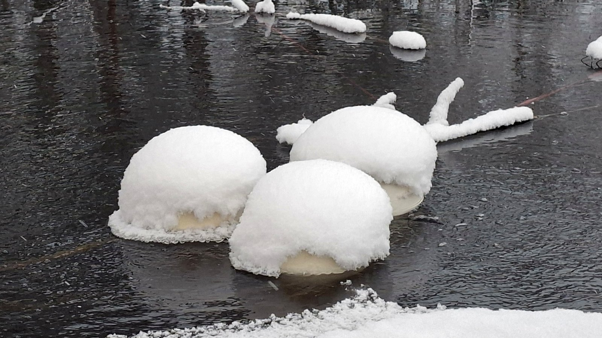

Three engineers who answer their own phones. Registered 2012 in Lahti. Recognised by Water Europe in 2014. Published at IWA in 2021. Installations in Finland, the Philippines and India — and a mission to restore natural waters, from village ponds to the Baltic Sea.
+358 500 603 020
mikael.seppala@sansox.fi
+358 40 500 1123
jukka.hakola@sansox.fi
+358 40 866 9506
juhani.pylkkanen@sansox.fi
Aeration floats keeping a Finnish pond open in January — a SansOx installation photographed this winter. Finnish water technology means one thing above all: measured against some of the strictest standards in Europe, in conditions that forgive nothing. This is also where our Nature Rejuvenation mission lives.

Aeration floats under snow, open water around them. Unretouched.
Funded winner of the Bank of Åland's Baltic Sea Project 2024, in a consortium with the City of Salo, the Finnish Institute for Health and Welfare (THL) and Savonia University of Applied Sciences: removing pharmaceutical residues and harmful microbes from discharge water by dissolving ozone through OxTube.
SansOx began as Happihyrrä Oy, chasing turbine efficiency in small hydropower. The economics didn't carry — but along the way we found that aeration had untapped potential, and the company turned. The first prototype proved itself in Kokkola. Awards followed (Water Europe 2014, Best Aeration Company 2015), then installations from the Philippines to India, a caviar farm in Karelia — and a published IWA paper. The full story deserves its own reading; the short version is above, in numbers.
Bring your flow rates and permit limits — you will get an honest answer.